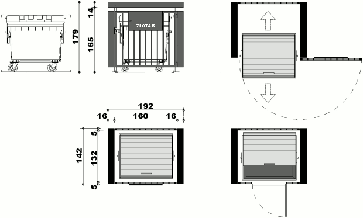
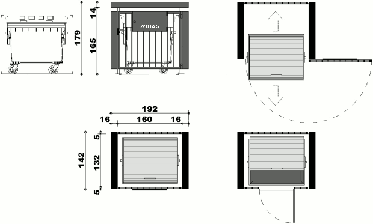

Obudowa śmietnika YOGI 1100
Przeznaczenie
Śmietnik YOGI 1100 - obudowa na typowy kontener 1100 litrów. Dostarczany jest zmontowany w całości i od razu gotowy do użytku.
Budowa
Wykonany z kształtowników stalowych zimnogiętych malowanych w dowolnym kolorze z palety RAL, wyposażony w dwa zamki patentowe. Piaskowany oraz malowany proszkowo.
Zalety:
- wysoka estetyka
- trwałość
- możliwość zamykania
- możliwość segregacji
- wypalany napis z adresem
- możliwość łączenia w zespoły
NIE WYMAGA POZWOLEŃ I ZGŁOSZEŃ
Czas realizacji:2-4 tygodni.
 

Możliwość łączenia w zespoły


OPIS WZORU PRZEMYSŁOWEGO
Obudowa śmietnika YOGI 1100 służy do skutecznego zamknięcia, estetycznego wygrodzenia oraz zadaszenia typowego kontenera na śmieci na 4 kołach o pojemności 1100 litrów.
Osłona śmietnika YOGI 1100 posiada mniejsze gabaryty w stosunku do tradycyjnych wygrodzeń kontenerów na śmieci. Obudowa z uwagi na brak tradycyjnych fundamentów może być traktowana jako element małej architektury i ustawiana bez konieczności dodatkowych pozwoleń w miejscach do tego przeznaczonych. Służy do obudowy jednego kontenera o pojemności 1100 l z możliwością zestawienia jej w różne układy. Gabaryty obudowy umożliwiają korzystanie z wyrzucania śmieci od zewnątrz bez wchodzenia do środka. Służą do tego otwierane drzwiczki (z zamkiem patentowym) umieszczone w górnej części frontowej bramki obudowy.
Obudowa śmietnika ponadto posiada miejsce dla oznaczenia rodzaju śmieci np. papier, szkło, plastik lub ulicę i nr.domu użytkowników korzystających z danego kontenera.
Obudowa wykonana jest z solidnych elementów stalowych tworząc trwałą i wytrzymałą konstrukcję. Zbudowana jest z kształtowników zimnogiętych stalowych piaskowanych oraz malowanych proszkowo. Frontowa część wykonana jest z pionowych słupków zabudowanych w ramie, w formie bramki zamykanej na zamek patentowy z klamką. W górnej części znajdują się mniejsze drzwiczki z blachy płaskiej z zamkiem patentowym służące do otwierania w trakcie wyrzucania śmieci. Tylna ścianka wykonana jest z pionowych słupków w ramie mocowanej na stałe do ścian bocznych obudowy. Ściany boczne wykonane z ramy z kształtownika z wypełnieniem z blachy pełnej. Dach z blachy falistej w ramie z kształtownika stalowego ustawionego na słupkach. Odprowadzenie wody z dachu poprzez niewielkie pochylenie go w kierunku tylnej ścianki. Całość obudowy śmietnika ustawiona na słupkach nad terenem przymocowanych za pomocą śrub do czterech bloczków betonowych wkopanych do ziemi.
Wymiary obudowy śmietnika Yogi 1100: szerokość 190 cm, głębokoścć 140cm, wysokość 180cm.
Osłony śmietników mogą być w szczególności wykorzystane w miejscach o niewielkiej powierzchni terenu dla ich usytuowania. Z uwagi na niską wysokość w stosunku do innych wygrodzeń mogą być lokalizowane na parkingach w bezpośrednim sąsiedztwie ulic, przy chodnikach, placach, wzdłuż ciągów pieszych.
Obudowy śmietników są w szczególności dedykowane dla firm prywatnych, budynków użyteczności publicznej, wspólnot i spółdzielni mieszkaniowych, dla wszystkich, którzy cenią sobie estetykę, trwałość oraz możliwość zamykania kontenera przed osobami podrzucającymi śmieci lub zanieczyszczających teren przeznaczony do gromadzenia śmieci.